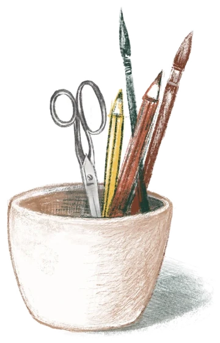
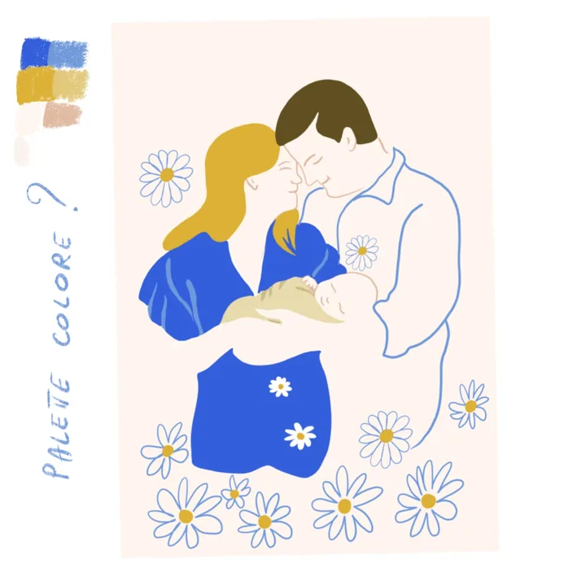

Immagino una coccola e i colori come acqua colorata che si mescolano.
Immagino una grafica pulita, semplice che li tiene uniti, stretti di gioia delicata.
Caterina

Lavori in corsoStudi per realizzare un disegno su carta o legno per una nascita.

Immagino una coccola e i colori come acqua colorata che si mescolano.
Immagino una grafica pulita, semplice che li tiene uniti, stretti di gioia delicata.
Caterina